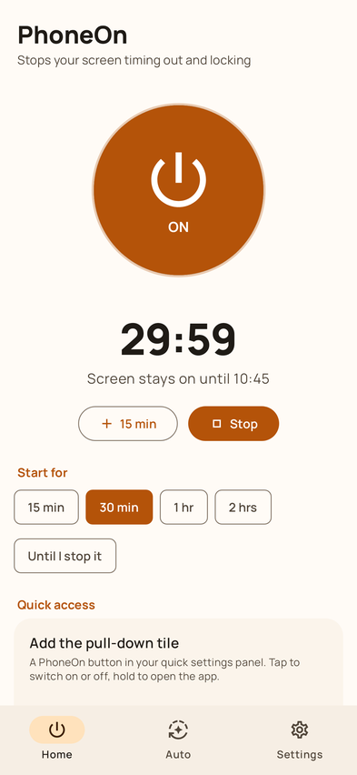
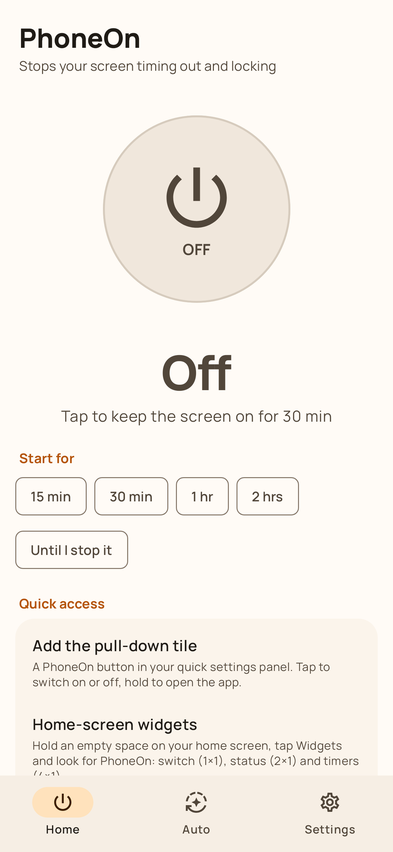
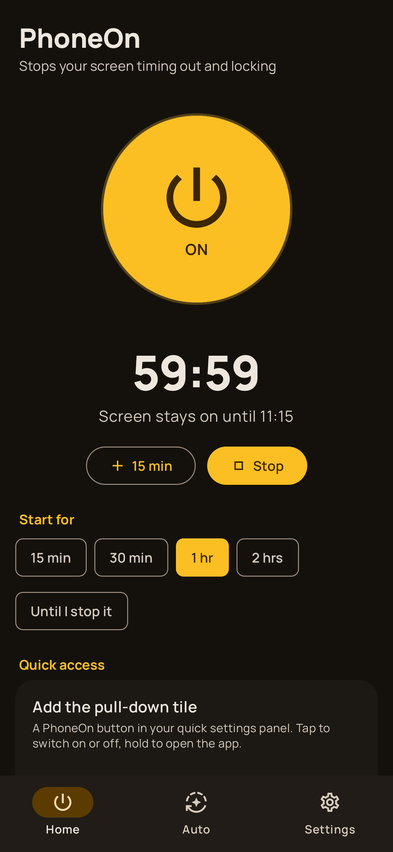
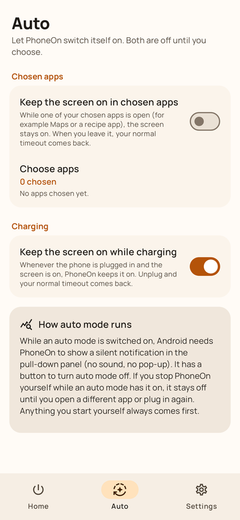
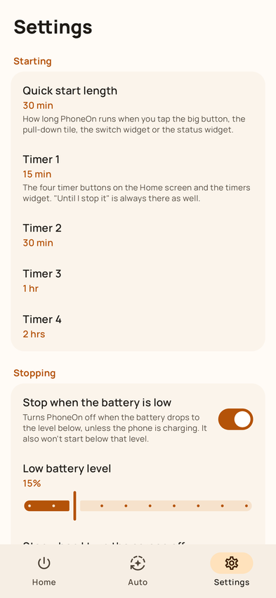
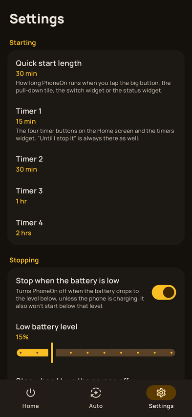
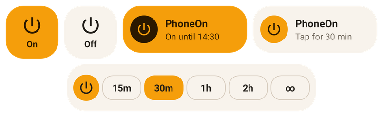

Keep your screen on for as long as you need.
Following a recipe, reading a drawing, checking a map or leaving something on show? PhoneOn stops your screen timing out and locking, for 15 minutes, an hour or until you stop it.
One tap from a widget, the pull-down tile or the app, and a quiet Stop button in your pull-down panel. Your phone's own timeout setting is never changed, so everything goes back to normal the moment you stop.
Download for AndroidHow to install
- Version 1.0.0
- Android 8 or later
- 1.3 MB
Free, with nothing to unlock. No adverts, no account with the developer, no tracking. Compare or read the release notes.
Chrome may say the file might be harmful. It shows this for app files that do not come from Google Play. Choose Download anyway.

- No internet accessPhoneOn cannot go online at all.
- No advertsNone in the app and none on this site.
- Nothing to buyEvery feature is free, with nothing locked.
- No accountNothing to sign up for.
A look inside
These are the real screens, drawn from the app's own code. Swipe or scroll sideways to see them all.





Widgets and the pull-down tile
Three home-screen widgets, shown on and off: a 1×1 switch, a 2×1 status that shows when it ends, and a 4×1 bar of timers. There is a pull-down tile too, and PhoneOn can add any of them for you from its Home screen.

How it works
PhoneOn keeps the screen on the way Android intends: an invisible 1-pixel layer that asks for the screen to stay on. Nothing in your phone's settings is changed.
Allow it once
The first time, PhoneOn asks for "Display over other apps". That is the only permission it needs.
Tap to start
Pick a timer, or tap the widget or tile for your quick start length. The screen stays on in every app.
Stop any time
Tap Stop in the pull-down panel, the widget or the app, or press the power button. Your normal timeout comes straight back.
Everything is in, and all of it is free
Nothing below is held back for a paid tier, because there is no paid tier.
Keeping it on
- One tap
- The big button, a home-screen widget or the pull-down tile. Tap again to stop.
- Timers
- 15 minutes, 30 minutes, 1 hour, 2 hours or until you stop it. All four timers can be changed.
- +15 minutes
- Need longer? Add 15 minutes from the app or the pull-down panel.
- Any app
- Works whatever is on screen: maps, recipes, documents, video calls, games.
Out of the way
- A quiet notification
- Only in the pull-down panel, with Stop and +15 min. No icon in the top bar, no sound, no pop-up.
- Three widgets
- A 1×1 switch, a 2×1 status showing when it ends, and a 4×1 bar of timers.
- Pull-down tile
- Switch PhoneOn on or off from quick settings. Hold it to open the app.
- Floating dot
- Optional. A small amber dot over your apps: tap to stop, drag to move.
Looks after itself
- Low-battery stop
- Turns off at 15% unless charging. Change the level, or switch it off.
- Stops with the power button
- Turn the screen off and PhoneOn stops, so it never runs on in a pocket.
- Auto in chosen apps
- Optional. Keeps the screen on while apps you choose are open, then lets it go.
- Auto while charging
- Optional. Keeps the screen on whenever the phone is plugged in.
Private by design
No internet at all
PhoneOn does not hold Android's internet permission. It cannot send anything anywhere.
No system settings changed
It never asks for "Modify system settings" and never changes your screen timeout.
Every permission explained
Each permission is explained in the app before Android asks, and everything beyond "Display over other apps" is optional.
Installing and updating
PhoneOn is not on Google Play, so your phone asks a couple of extra questions the first time.
Download the app file
Tap Download on your phone. The file is called PhoneOn.apk and is about 1.3 MB. If Chrome says the file might be harmful, choose Download anyway.
Allow the install
Open the file. The first time, Android asks you to allow your browser to install apps. Allow it, go back and tap Install. If Google Play Protect steps in, choose More details, then Install anyway.
Updating later
PhoneOn never goes online, so it cannot check for updates itself. Settings, About, Check for updates opens the release notes in your browser. Install the new file over the old one and your settings are kept.
Version 1.0.0, released 26 November 2026. See the release notes, or check your download.
Questions
Is PhoneOn really free?
Yes. There is no paid version, no subscription and no adverts, and nothing in the app is locked.
Is it on Google Play?
No. PhoneOn is a personal project and is downloaded from this site as an Android app file. It needs Android 8 or later.
Does it change my phone's screen timeout setting?
No. PhoneOn never touches the phone's own timeout and does not ask for "Modify system settings". It keeps the screen on while it runs; when you stop it, your normal timeout and lock carry on as before.
Why does it need "Display over other apps"?
That is how it keeps the screen on in every app. PhoneOn places an invisible 1-pixel layer on screen that tells Android not to time out. It cannot see or touch anything in your other apps.
Will it drain my battery?
Only as much as the screen itself, because the screen is what stays on. PhoneOn stops on its own at low battery, when its timer ends, and when you press the power button. It uses no battery when it is off.
Does it stop the power button locking the phone?
No. Pressing the power button turns the screen off and locks the phone as normal, and PhoneOn stops.
What are auto modes?
Two optional extras, both off until you choose: keep the screen on while chosen apps are open, or whenever the phone is charging. While one is on, Android needs a silent notification in the pull-down panel.
What does usage access do?
Only the chosen-apps auto mode uses it, to see which app is open. It checks the app's name, never what is in it, and nothing leaves your phone.
Does it work on an iPhone?
No. PhoneOn is for Android phones and tablets only.
Who made it?
PhoneOn is made by Jonathan Jackson, an independent developer in the United Kingdom.
Keep the screen on, your way
Free, with no adverts and nothing to unlock. Made by the developer of several other free Android apps: see them all.